Polynomfunksjoner
Du skal ha kompetanse om
- funksjonsbegrepet: \(y = f(x)\)
- lineære funksjoner: \(y = ax + b\)
- andregradsfunksjoner: \(f(x) = ax^2 + bx + c \)
- polynomfunksjoner: \( f(x) = ax^m + bx^n + ... \)
- polynomdivisjon og faktorisering \[ (x^3 - 2x^2 - 5x + 6) : (x - 1) = x^2 - x - 6 \;\;\; \Rightarrow \;\; (x^3 - 2x^2 - 5x + 6) = (x-1)(x^2 - x - 6) \]
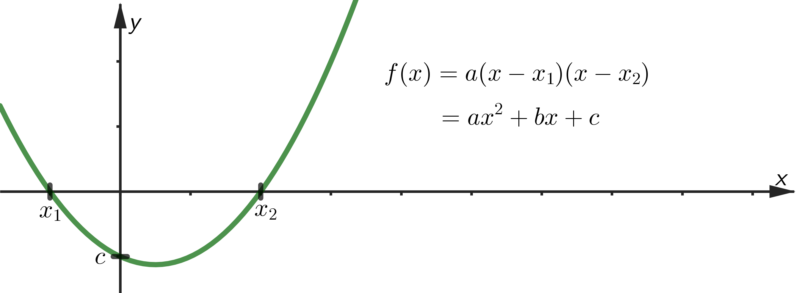
Funksjonsbegrepet
Eksempel
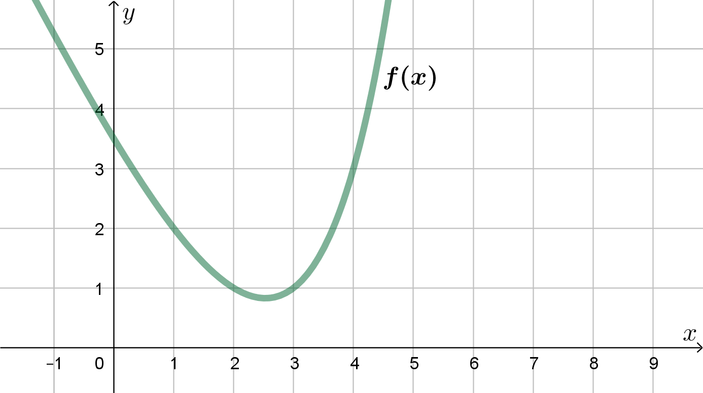
Bestem funksjonsverdien \(f(4)\) og løs likningen \(f(x) = 1\).
Vi leser av at \(f(4) = 3\).
Vi leser av at \(f(x) = 1\) når \(x = 2\) og når \(x=3\).
Vi leser av at \(f(x) = 1\) når \(x = 2\) og når \(x=3\).
Eksempel
\[ f(x) = 2^x - 2x \] Bestem funksjonsverdien \(f(0)\) og løs likningen \(f(x) = 0\).
Vi regner ut: \(f(0) = 2^0 - 2\cdot 0 = 1 - 0 = 1\).
Vi løser likningen med prøving-og-feiling: $$ \begin{align} f(0) &= 2^0 - 2\cdot 0 = 1 - 0 = 1 \\ f(1) &= 2^1 - 2\cdot 1 = 2 -2 = 0 \\ f(2) &= 2^2 - 2\cdot 2 = 4 - 4 = 0 \\ f(3) &= 2^3 - 2\cdot 3 = 8 - 6 = 2 \\ f(4) &= 2^4 - 2\cdot 4 = 16 - 8 = 8 \\ \end{align} $$ Altså er \(f(x)=0\) når \(x=1\) eller \(x=2\).
Vi løser likningen med prøving-og-feiling: $$ \begin{align} f(0) &= 2^0 - 2\cdot 0 = 1 - 0 = 1 \\ f(1) &= 2^1 - 2\cdot 1 = 2 -2 = 0 \\ f(2) &= 2^2 - 2\cdot 2 = 4 - 4 = 0 \\ f(3) &= 2^3 - 2\cdot 3 = 8 - 6 = 2 \\ f(4) &= 2^4 - 2\cdot 4 = 16 - 8 = 8 \\ \end{align} $$ Altså er \(f(x)=0\) når \(x=1\) eller \(x=2\).
Eksempel
\[ f(x) = 2^x - x \] Tegn grafen til \(f(x)\).
Vi regner ut noen tilhørende \(y\)-verdier til noen \(x\)-verdier, og plasserer punktene i et grafikkfelt.
\[
\begin{alignat}{2}
x = -2 \;\;\;,\;\;\; y &= f(-2) = 2^{-2}-(-2)=0\text{,}25+2 = 2\text{,}25
&\quad \rightarrow\quad & (x, y) = (-2\,,\; 2\text{,}25) \\
x = -1 \;\;\;,\;\;\; y &= f(-1) = 2^{-1}-(-1)=0\text{,}5+1 = 1\text{,}5
&\quad \rightarrow\quad & (x, y) = (-1\,,\; 1\text{,}5) \\
x = 0 \;\;\;,\;\;\; y &= f(0) = 2^{0}-0=1
&\quad \rightarrow\quad & (x, y) = (0\,,\; 1) \\
x = 1 \;\;\;,\;\;\; y &= f(1) = 2^{1}-1=2-1=1
&\quad \rightarrow\quad & (x, y) = (1\,,\; 1) \\
x = 2 \;\;\;,\;\;\; y &= f(2) = 2^{2}-2=4-2=2
&\quad \rightarrow\quad & (x, y) = (2\,,\; 2) \\
x = 3 \;\;\;,\;\;\; y &= f(3) = 2^{3}-3=8-3=5
&\quad \rightarrow\quad & (x, y) = (3\,,\; 5)
\end{alignat}
\]
Vi plasserer punktene og skisserer en graf:
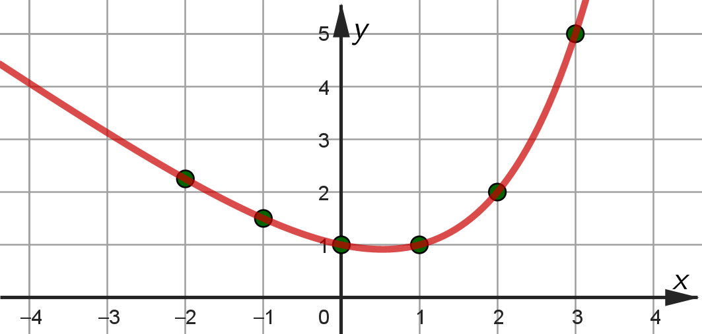
Lineære funksjoner
y = x + 1
Merk: Vi skriver ofte \(y=ax +b\) for lineære funksjoner, istedenfor \(f(x)=ax +b\). Når vi bruker \(y\) istedenfor \(f(x)\) sier vi "likningen til linja".
Eksempel
En linje går gjennom punktene \((1, 2)\) og \((5, 3)\).Bestem likningen til linja.
Signingstallet er
\[ a = \frac{\Delta y}{\Delta x} = \frac{3 - 2}{5 - 1} = \frac{1}{4} \]
Ett-punktsformelen med utgangspunkt i \((1, 2)\) gir da
$$
\begin{align}
y - 2 &= \frac{1}{4}(x - 1) \\
y - 2 &= \frac{x}{4} - \frac{1}{4} \\
y &= \frac{x}{4} - \frac{1}{4} + 2 \\
y &= \frac{x}{4} +\frac{7}{4}
\end{align}
$$
Eksempel
Lag en programkode som beregner likningen for ei linje. På de første linjene i programmet skal du kunne legge inn koordinatene til to punkter på linja.Test programmet for ei linje som går gjennom punktene \((1, 2)\) og \((5, 3)\).
Likningen til linja er
\[ y = a \cdot x + b \]
hvor stigningstallet er
\[ a = \frac{\Delta y}{\Delta x} = \frac{y_2 - y_1}{x_2 - x_1} \]
og konstantleddet finner vi ved å sette inn en \(x\)- og \(y\)-verdi:
\[ y_1 = a \cdot x_1 + b \;\; \Rightarrow \;\; b = y_1 - a \cdot x_1\]
x1, y1 = 1, 2
x2, y2 = 5, 3
a = (y2 - y1)/(x2 - x1)
b = y_1 - a*x1
print('y = ', a, 'x + ', b)y = 0.25 x + 1.75Andregradsfunksjoner
Andregradsfunksjoner er på formen \(f(x) = ax^2 + bx + c\).
y = 0,5x2 + 1
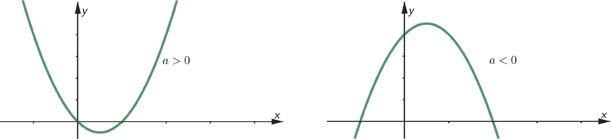
Vi kan bestemme funksjonsuttrykket fra grafen ved hjelp av nullpunktene og skjæringen med \(y\)-aksen.
Merk: Andregradsfunksjoner er speilsymmetriske. Dermed er topp-/bunnpunktet midt mellom nullpunktene.
Eksempel
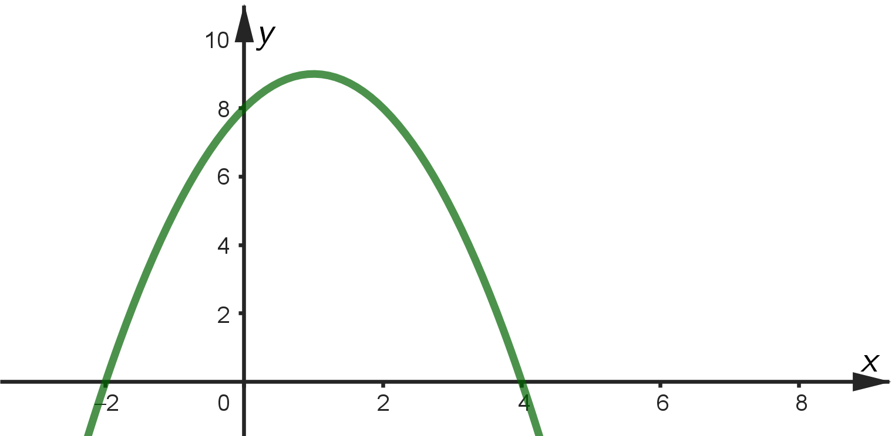
Bestem funksjonsuttrykket, og bestem toppunktet til funksjonen.
Nullpunktene gir
\[ f(x) = a(x - (-2))(x - 4) = a(x^2 - 2x - 8) = ax^2 - 2ax - 8a \]
Skjæringen med \(y\)-aksen gir
\[ -8a = 8 \;\; \rightarrow \;\; a = -1 \]
Dermed er funksjonen \( f(x) = -x^2 + 2x + 8 \).
Symmetri gir at funksjonen har toppunkt midt mellom nullpunktene; \( (1, f(1)) = (1, 9) \).
Symmetri gir at funksjonen har toppunkt midt mellom nullpunktene; \( (1, f(1)) = (1, 9) \).
Eksempel
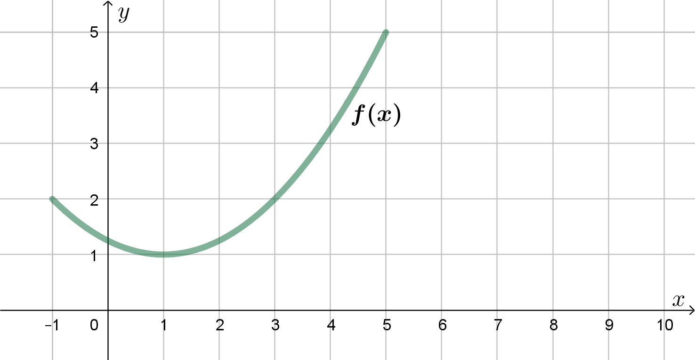
Bestem funksjonsuttrykket.
Hvis funksjonsverdiene hadde vært 2 mindre, ville funksjonen hatt nullpunkter i \(-1\) og \(3\), som ville gitt
\[ f(x) = a(x + 1)(x - 3) \]
Bunnpunktet ville da vært \((1, -1)\), som gir
\[ -1 = a \cdot 2 \cdot (-2) = -4a \;\; \rightarrow \;\; a = \frac{1}{4} \]
Dermed er funksjonsuttrykket
\[ f(x) = \frac{1}{4}(x+1)(x-3) + 2 = \frac{1}{4}x^2 - \frac{1}{4} \cdot 2x - \frac{1}{4}\cdot 3 + 2 = \frac{1}{4}x^2 - \frac{1}{2}x + \frac{5}{8} \]
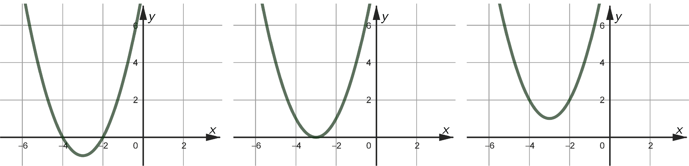
\[ \text{To: }b^2 + 4ac > 0 \hphantom{\text{To: }b^2 + 4ac > 0} \text{Ett: }b^2 + 4ac = 0 \hphantom{\text{To: }b^2 + 4ac > 0}\text{Ingen: }b^2 + 4ac < 0 \]Eksempel
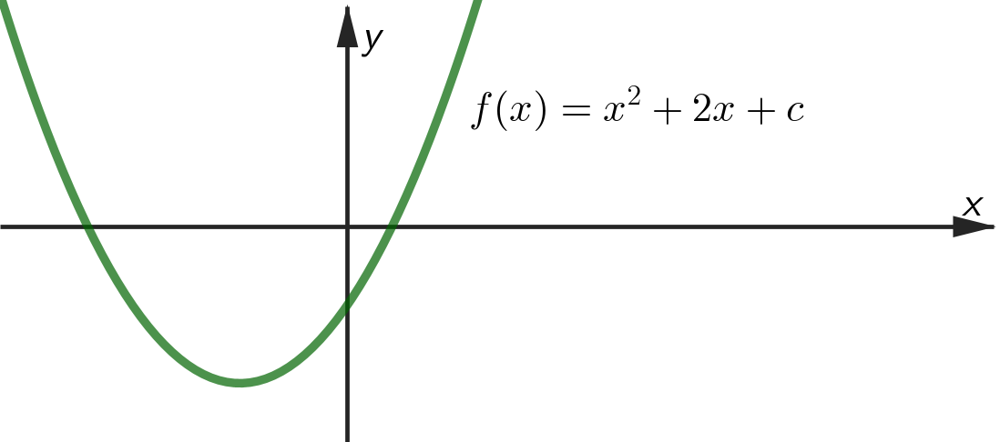
Bestem \(c\) slik at \(f\) har nøyaktig ett nullpunkt.
\[ x = \frac{-b \pm \sqrt{b^2 - 4ac}}{2a} = \frac{-2 \pm \sqrt{4 - 4c}}{2} \]
Vi ser at kvadratroten blir null, slik at det blir ett nullpunkt, dersom \(c = 1\).
Merk: En andregradsfunksjon har nøyaktig ett nullpunkt når funksjonsuttrykket kan skrives som et fullstendig kvadrat, \(f(x) = a(x-x_0)^2\).
Dermed kan eksempelet over også løses ved å se hva \(c\) må være hvis \(f\) skal kunne skrives som et fullstendig kvadrat.
Dermed kan eksempelet over også løses ved å se hva \(c\) må være hvis \(f\) skal kunne skrives som et fullstendig kvadrat.
Eksempel
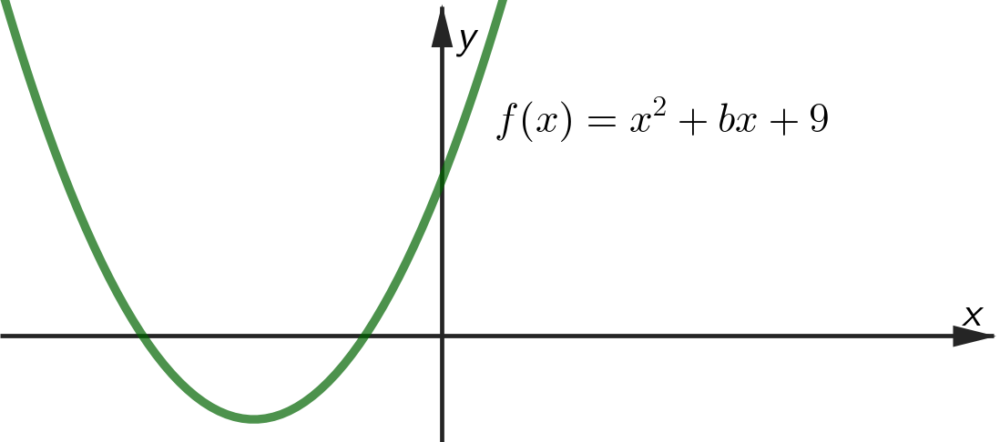
Bestem \(b\) slik at \(f\) har nøyaktig ett nullpunkt.
METODE 1:
Vi kan bruke abc-formelen: \[ x = \frac{-b \pm \sqrt{b^2 - 4ac}}{2a} \] Når diskriminanten \(b^2 - 4ac\) er null, har funksjonen ett nullpunkt: \[ b^2 - 4ac = b^2 - 4 \cdot 1 \cdot 9 = 0 \;\;\; \Rightarrow \;\; b^2 = 36 \;\; \Rightarrow \;\; b = \pm 6 \]
METODE 2:
Vi kan skrive \(f(x)\) som et fullstendig kvadrat, og deretter gange ut parentesene for å se hva \(b\) kan være.
Det bakerste leddet, 9, gir følgende: \[ f(x) = \left( x + 3 \right)^2 = x^2 + 6x + 9 \;\;\text{ eller}\;\; f(x) = \left( x - 3 \right)^2 = x^2 - 6x + 9 \] Altså er \(b = 6 \) eller \(b = -6\).
Vi kan bruke abc-formelen: \[ x = \frac{-b \pm \sqrt{b^2 - 4ac}}{2a} \] Når diskriminanten \(b^2 - 4ac\) er null, har funksjonen ett nullpunkt: \[ b^2 - 4ac = b^2 - 4 \cdot 1 \cdot 9 = 0 \;\;\; \Rightarrow \;\; b^2 = 36 \;\; \Rightarrow \;\; b = \pm 6 \]
METODE 2:
Vi kan skrive \(f(x)\) som et fullstendig kvadrat, og deretter gange ut parentesene for å se hva \(b\) kan være.
Det bakerste leddet, 9, gir følgende: \[ f(x) = \left( x + 3 \right)^2 = x^2 + 6x + 9 \;\;\text{ eller}\;\; f(x) = \left( x - 3 \right)^2 = x^2 - 6x + 9 \] Altså er \(b = 6 \) eller \(b = -6\).
Polynomfunksjoner
Polynomfunksjoner er gitt ved \[ \begin{align} P(x) &= ax + b \;\;\; \text{(førstegradsfunksjon)} \\ P(x) &= ax^2 + bx + c \;\;\; \text{(andregradsfunksjon)} \\ P(x) &= ax^3 + bx^2 + cx + d \;\;\; \text{(tredjegradsfunksjon)} \\ &\vdots \\ P(x) &= ax^{6} + bx^5 + cx^4 + dx^3 +ex^2 + fx + h \;\;\; \text{(sjettegradsfunksjon)} \\ &\vdots \end{align} \] Vi kan bestemme funksjonsuttrykket fra grafen ved hjelp av nullpunktene og skjæringen med \(y\)-aksen.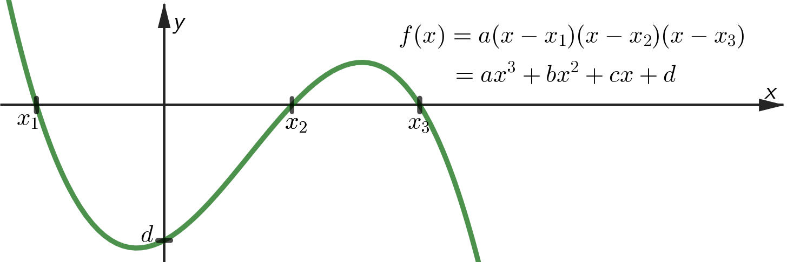
Eksempel
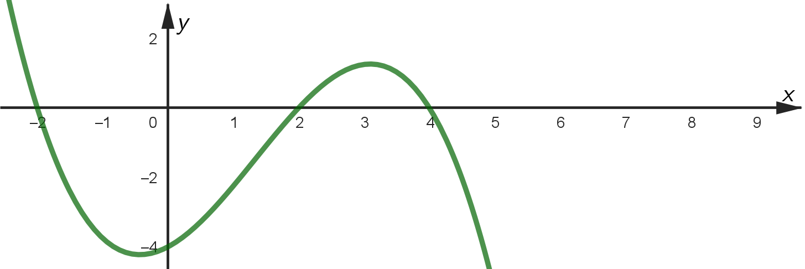
Bestem funksjonsuttrykket.
Nullpunktene gir
$$
\begin{align}
f(x) &= a(x - (-2))(x - 2)(x-4) \\
&= a(x^2 - 4)(x - 4) \\
&= a(x^3 - 4x^2 - 4x + 16)
\end{align}
$$
Skjæringen med \(y\)-aksen gir
\[ 16a = -4 \;\; \rightarrow \;\; a = -\frac{1}{4} \]
Dermed er funksjonen \( f(x) = -\frac{1}{4}x^3 + x^2 + x - 4 \).
Polynomdivisjon
Vi har ikke en enkel formel for å finne nullpunktene til tredjegradsfunksjoner, slik som vi har abc-formelen for andregradsfuksjoner, men vi kan bruke noe som kalles polynomdivisjon for å faktorisere funksjonen dersom vi vet hva ett av nullpunktene er.
Eksempel
\[ P(x) = x^3 - 2x^2 - 5x + 6 \] Faktoriser uttrykket og bestem alle nullpunktene.
Med prøving-og-feiling ser vi at \(x=1\) er et nullpunkt:
\[P(1) = 1^3 - 2\cdot 1^2 - 5 \cdot 1 + 6 = 1 - 2 - 5 + 6 = 0\]
Dermed kan funksjonen faktoriseres til
\[ P(x) = (x - 1)(ax^2 + bx + c) \]
For å bestemme uttrykket i den siste parentesen deler vi på \((x-1)\), slik:
$$
\begin{align}
&\hphantom{-(}(x^3 - 2x^2 - 5x + 6) : (x - 1) = x^2 - x - 6\\
&\underline{\;-(x^3 - x^2)}\\
&\hphantom{-(x^3}-x^2 - 5x + 6\\
&\hphantom{x^3}\underline{\;-(-x^2 + x)}\\
&\hphantom{-(x^3-x^2)}-6x + 6\\
&\hphantom{(x^3-x^2}\underline{\;-(-6x + 6)}\\
&\hphantom{-(x^3-x^2-6xxx)}0 \text{ i rest}
\end{align}
$$
Dermed kan funksjonen faktoriseres til
\[ P(x) = (x - 1)(x^2 - x - 6) = (x-1)(x-3)(x+2) \]
og nullpunktene er \(x=1\), \(x=3\) og \(x=-2\).
Gjennomgang av polynomdivisjon: YouTube-film med polynomdivisjon.
Resten i en polynomdivisjon: Divisjonen \(P(x):(x - a)\) har resten \(P(a)\).Eksempel
\[ P(x) = x^3 - 2x^2 - 5x + 8 \] Bestem resten til divisjonen \(P(x):(x-1)\) på to måter.
Metode 1: \(P(1) = 1^3 - 2\cdot 1^2 - 5 \cdot 1 + 8 = 2\)
Metode 2: $$ \begin{align} &\hphantom{-(}(x^3 - 2x^2 - 5x + 8) : (x - 1) = x^2 - x - 6 + \frac{2}{x-1}\\ &\underline{\;-(x^3 - x^2)}\\ &\hphantom{-(x^3}-x^2 - 5x + 8\\ &\hphantom{x^3}\underline{\;-(-x^2 + x)}\\ &\hphantom{-(x^3-x^2)}-6x + 8\\ &\hphantom{(x^3-x^2}\underline{\;-(-6x + 6)}\\ &\hphantom{-(x^3-x^2-6xxx)}2 \text{ i rest} \end{align} $$
Metode 2: $$ \begin{align} &\hphantom{-(}(x^3 - 2x^2 - 5x + 8) : (x - 1) = x^2 - x - 6 + \frac{2}{x-1}\\ &\underline{\;-(x^3 - x^2)}\\ &\hphantom{-(x^3}-x^2 - 5x + 8\\ &\hphantom{x^3}\underline{\;-(-x^2 + x)}\\ &\hphantom{-(x^3-x^2)}-6x + 8\\ &\hphantom{(x^3-x^2}\underline{\;-(-6x + 6)}\\ &\hphantom{-(x^3-x^2-6xxx)}2 \text{ i rest} \end{align} $$
Merk: Resten legges til som en brøk bakerst på svaret når vi gjennomfører polynomdivisjonen over.